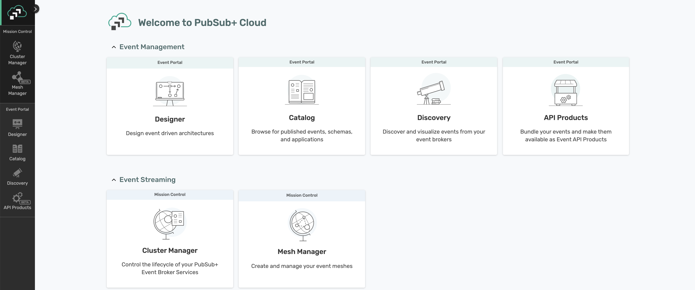
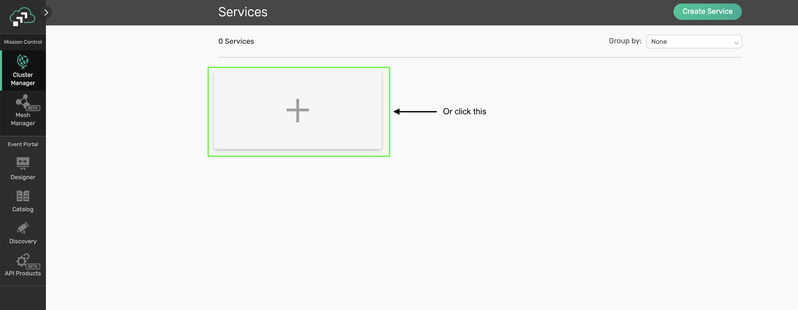
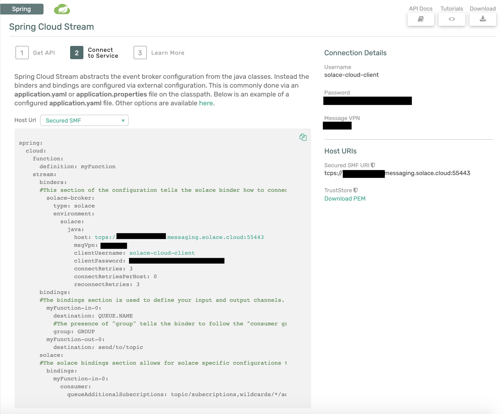
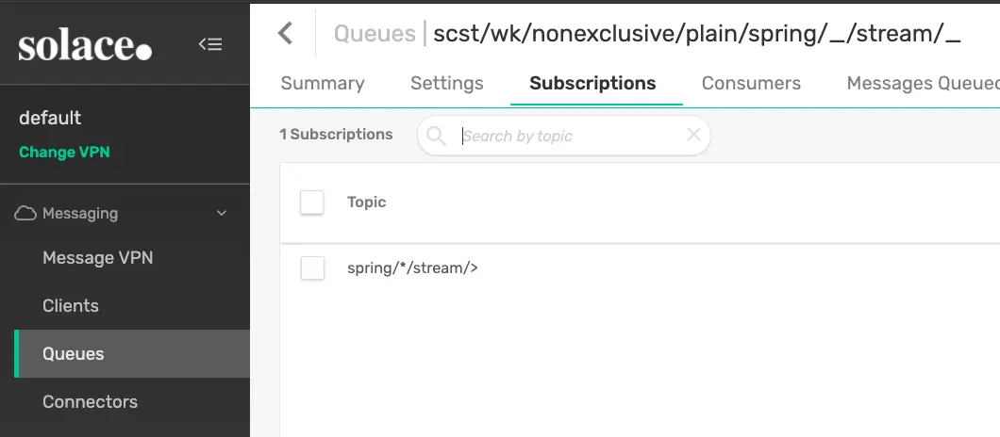
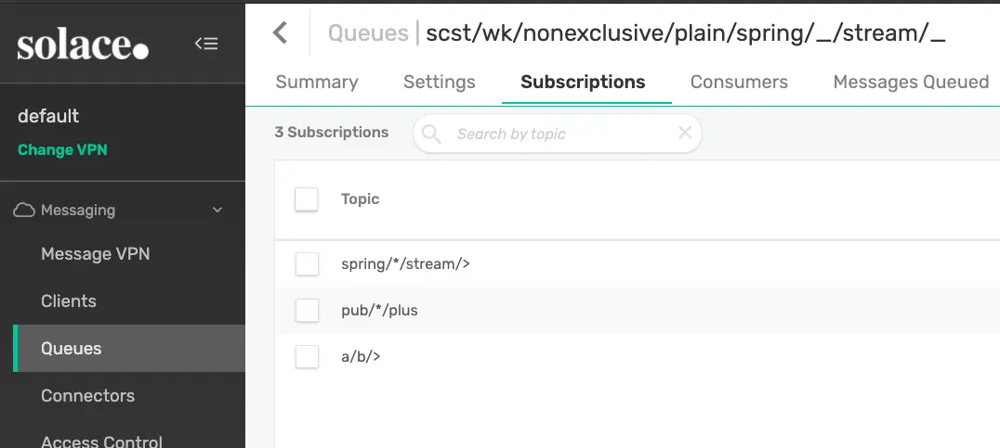
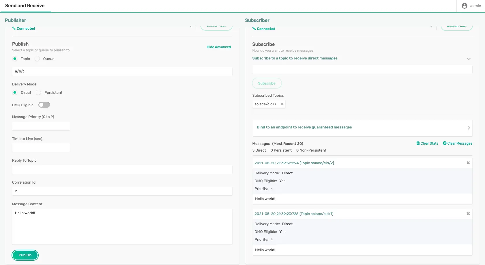
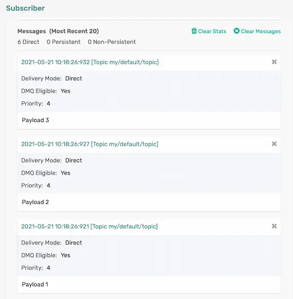
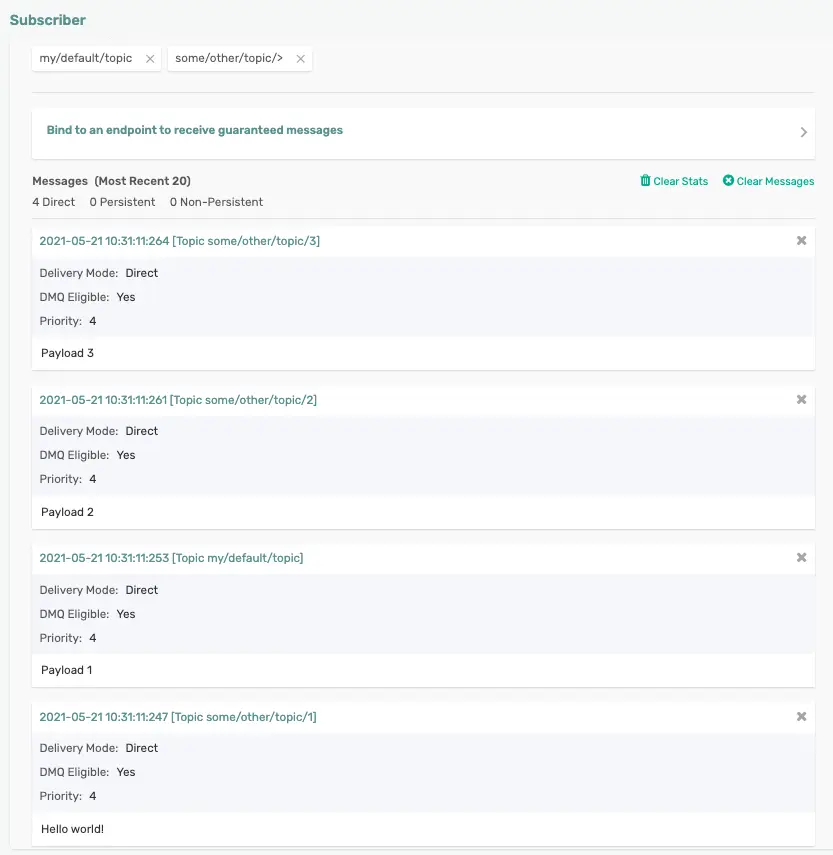
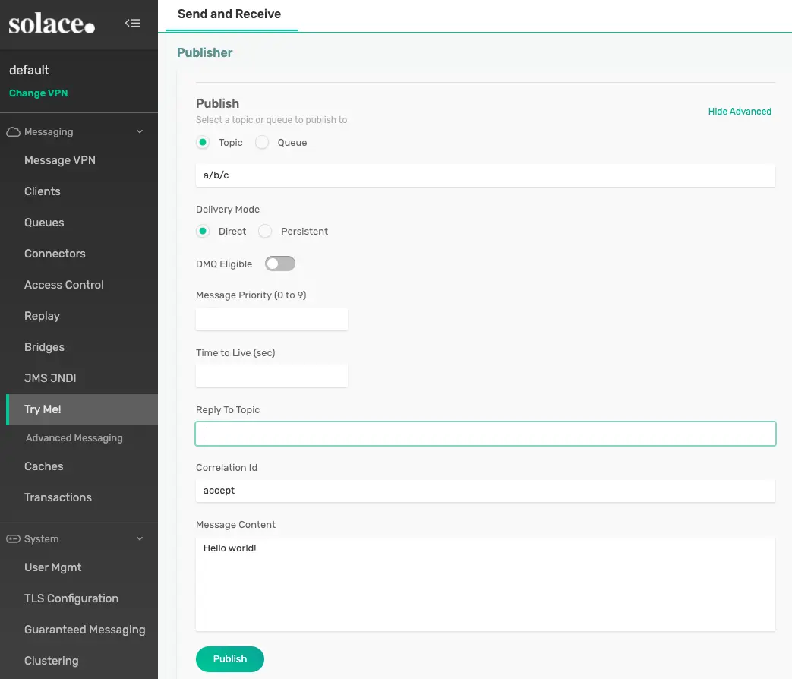

This codelab is a follow-on to the Spring Cloud Stream Basics one. If you aren't yet familiar with the Spring Cloud Stream framework go ahead and jump over there to get a quick introduction to the framework. This codelab will go into more detail (Beyond the Basics 😜) of developing your Cloud Stream microservice. We will be using the Solace binder and Event Broker thoughout. The majority of features we will learn today apply at the framework level and do not depend on the underlying broker/binder of choice, however a few will be Solace specific and I will try to specify that when necessary.
💡 You'll Learn:
- How to choose your communication model
- How to use concurrency to scale your apps
- How to use Message Headers
- How to subscribe using Wildcards
- How to publish to dynamic topics and in batches
- How to handle error scenarios
💎 Valuable Resources:
- The Spring Cloud Stream Reference Guide
- Solace Binder Docs
- Spring Sample Github Repository
- Solace Sample Github Repository
🛠 This page covers the setup needed to perform this codelab. 🛠
Spring Cloud Stream Requirements
✅ Spring Cloud Stream just requires Java and Maven to use 🚀
- Java 1.8+ (Check version using
java -version) - Maven 3.3+ (Check version using
mvn -version)- On mac you can
brew install maven - Other install instructions here
- On mac you can
- Your favorite Java IDE 💥
Create your Messaging Service
✅ (1) Sign up for a free Solace Cloud account
Navigate to this link and fill out the required information. No credit card required! If you already have an account, skip right to #2.
✅ (2) Create a messaging service
After you create your Solace Cloud account and sign in to the Solace Cloud Console, you'll be routed to the Solace Cloud Landing page.

Click on ‘Cluster Manager' and all the messaging services associated with your account will show up if you have any already created. To create a new service, click either button as depicted in the image below:

Fill out all the details for your messaging service, and then click "Create" at the bottom of the page. Note: make sure you choose the "Developer" option for the Service Type

Your service should be ready to use in a few minutes
✅ (3) Take note of the connection details
If your messaging service was created successfully, you'll be routed to the summary page of your new messaging service. From the service summary page, click on the "Connect" tab so we can take note of the connection details we'll need later.

After you click the "Connect" tab, sort the supported client library menu by Language and click on the "Connect with Spring" box to expand it.

Click on the Get Started button next to the Spring Cloud Stream option.

Take note of the "Connect to Service" section and you'll see that the connection details are already configured in the spring.cloud.stream.binders part of the config to connect a Spring Cloud Stream microservice to your PubSub+ Messaging Service. We'll be using this soon 😄

Create a Spring Cloud Stream Microservice
✅ (1) Create an Empty Spring Cloud Stream Microservice to use throughout this codelab
Navigate to start.spring.io and choose the "Solace PubSub+" and the "Cloud Stream" dependencies. If you used that link we already added them for you 😉.
You can leave everything else as the default or modify the Java version, package info, etc. as desired.
Click the "Generate" button which will download the project. You can then unzip it and import the project into your preferred Java IDE as a maven project. I'll be using Spring Tool Suite 4 for Eclipse in the screenshots.
Your imported project should look like this:
✅ (2) Add your Connection Details from the Messaging Service
Change the application.properties file to application.yml and copy and paste the spring.cloud.stream.binders part of the Spring Cloud Stream configuration previously found in the "Connect to Service" widget in your Message Service.
It should look something like this:
spring:
cloud:
stream:
binders:
solace-cloud:
type: solace
environment:
solace:
java:
clientUsername: default
clientPassword: default
host: 'tcp://localhost:55555'
msgVpn: default
🚀 Setup complete! Let's get going! 🚀
As discussed in the Spring Cloud Stream Basics codelab, the Cloud Stream framework supports multiple communication models. Since the Solace Binder supports both Publish-Subscribe and Consumer Groups we will focus on those. Note that this decision is made on an input binding, or where you configure consumption of events/messages.
Before we jump into choosing our consumption model, which is done via configuration, let's create a quick Consumer app that we can use.
- Open the
DemoApplication.javafile in your microservice. - Write a quick
Consumerfunction that receives aString@Bean public Consumer<String> myConsumer(){ return v -> { System.out.println("Received: " + v); }; }
Now that we have a function we'll look at the different options to configure the binding which tells the binder how to connect your function to the underlying message broker.
When using Spring Cloud Stream with the Solace Binder you can decide between 3 options:
- Publish-Subscribe (Non-Durable): My events must be processed in order so I want them processed by one microservice AND I only care about receiving events when my microservice is connected.
- Publish-Subscribe (Durable): My events must be processed in order so I want them processed by one microservice AND I want events saved when my microservice is disconnected.
- Consumer Groups: I need to be able to scale my microservices up/down in order to process my events and order isn't important.
Publish-Subscribe (Non-Durable)
There are many use cases where you need to process events in order as they are published to a defined topic. In order to do this with Spring Cloud Stream you would create your Function or Consumer function and configure the input binding for it to receive messagesfrom a specific destination. There are two ways to do this with the Solace binder. The standard way, with no Solace specific configurations, is non-durable and we'll start there.
👀 Under the covers this option will use a Non-Durable Anonymous Queue on the broker to hold the messages for the consuming microservice. Let's check it out!
This option will deliver events in order to your microservice while it remains up and running. To do this we just to specify a destination, but NO group on your input binding.
So open your application.yml file and add the following config to what already exists. This configuration is telling Spring Cloud Stream that you want your myConsumer
spring:
cloud:
function:
definition: myConsumer
stream:
bindings:
myConsumer-in-0:
destination: spring/cloud/stream
Go ahead and run your app. You should see the app start up and connect to the event broker. Note that under the covers the Solace Binder will bind your function to a Non-Durable Anonymous (or Temporary) queue on the broker.
This endpoint type in Solace is a temporary queue that will deliver messages to your app in order while your app remains online. It however is NOT a durable endpoint and will be removed after your application goes offline for more than 30 seconds.
You'll see the name of your Anonymous Queue shown in a log entry on the console from the SolaceQueueProvisioner class:
SolaceQueueProvisioner : Subscribing queue #P2P/QTMP/v:b0e95afab69a/scst/an/59e7cbe3-ec38-4da8-a8fa-d1e428f6eb56/plain/spring/cloud/stream to topic spring/cloud/stream
🛠 Let's test this out using the "Try-Me" tab in Solace Cloud.
- Navigate to the Solace Cloud Console
- Choose "Cluster Manager" -> and click the messaging service you created earlier
- Click the "Try-Me!" option on the top menu
- Click "Connect" on the "Publisher" side
- Type in the
spring/cloud/streamtopic - Change the "Message" to whatever you'd like and click "Send"
TODO - INSERT TRY-ME IMAGE.
This option is great when we don't need to store messages/events when the app is offline, but what if we do!?
Publish-Subscribe (Durable)
Sometimes it isn't enough to be able to deliver messages/events only while the app remains connected to the broker; there are many scenarios where you want messages stored while the app is offline while still maintaining order. In this case the Solace Binder allows you to follow the Publish-Subscribe pattern and consume from an Exclusive Durable Queue that will do just that.
In order to modify the input binding to create an Exclusive Durable Queue we need to add a group to our binding and also set the Solace specific property queueAccessType to EndpointProperties.ACCESSTYPE_NONEXCLUSIVE. We do that with the configuration below.
spring:
cloud:
function:
definition: myConsumer
stream:
bindings:
myConsumer-in-0:
destination: spring/cloud/stream
group: exclusive
solace:
bindings:
myConsumer-in-0:
consumer:
queue-access-type: 1 #1 is Exclusive; 0 is Non-Exclusive (and default)
Now if you restart your app you'll see that a durable queue was created.
SolaceQueueProvisioner : Subscribing queue scst/wk/exclusive/plain/spring/cloud/stream to topic spring/cloud/stream
And if you look in PubSub+ Manager you'll find that the queue is "Exclusive" which means that the first microservice which connects to it will receive all the messages in the order they are received by the broker.
🛠 Go ahead and test it out by sending more messages with the "Try-Me" tab. Now that the queue is durable you can even stop your app, send a bunch of messages and then start it back up to see that they are delivered in order.
Consumer Groups
Another popular consuming pattern is using what are called Consumer Groups. Consumer groups in Spring Cloud Stream allow you to have multiple consumers sharing the processing of events.
To do this you just need to specify a group on your input binding.
To configure this on our app that has the myConsumer Consumer function your config would look like this.
spring:
cloud:
function:
definition: myConsumer
stream:
bindings:
myConsumer-in-0:
destination: spring/cloud/stream
group: nonexclusive
When using the Solace Binder and specifying a group the binder will actually create a Durable Non-Exclusive Queue Endpoint by default. This durable queue will hold messages for your microservices if they get disconnected.
Go ahead and run the app, you'll see the following log message that specifies the queue.
SolaceQueueProvisioner : Subscribing queue scst/wk/nonexclusive/plain/spring/cloud/stream to topic spring/cloud/stream
And in the PubSub+ Manager you'll see that it created a non-exclusive queue:
Scaling
So we're using the Consumer Group pattern (which uses a Non-Exclusive Queue!) so we can have multiple consumers share the processing of events. What are the choices for scaling!?
Option 1 - Multiple Instances of your Microservice
The first option is just to start up more instances of your microservice. This is common in a Kubernetes environment where your microservice runs in it's own container. Each instance of the microservice will connect to the same non-exclusive queue on the Solace broker and the broker will spread the messages across all consumers.
Option 2 - Concurrent Message Consumption in a Single Microservice
The second option is to use the concurrency consumer property to enable concurrent message consumption for a particular consumer binding. Under the covers the Solace binder will create a separate flow for
Modify your microservice's configuration to set a concurrency of 5 like seen below:
spring:
cloud:
function:
definition: myConsumer
stream:
bindings:
myConsumer-in-0:
destination: spring/cloud/stream
group: nonexclusive
consumer:
concurrency: 5
When you restart your app you'll see that the Solace binder creates 5 separate "flow receivers". Note that they all share the same Solace session and will process events on separate threads.
JCSMPInboundChannelAdapter : Creating consumer 1 of 5 for inbound adapter 5722ebd9-7f2a-40ba-b635-235a86938638
FlowReceiverContainer : Binding flow receiver container 76e517b1-d1a8-4ab2-975f-e4eb0b12535a
JCSMPInboundChannelAdapter : Creating consumer 2 of 5 for inbound adapter 5722ebd9-7f2a-40ba-b635-235a86938638
FlowReceiverContainer : Binding flow receiver container 0aba1d4b-fe21-42ed-ae3b-db6fc5a62d61
JCSMPInboundChannelAdapter : Creating consumer 3 of 5 for inbound adapter 5722ebd9-7f2a-40ba-b635-235a86938638
FlowReceiverContainer : Binding flow receiver container 67fa395b-6f50-40b5-ab34-b7fff446c50e
JCSMPInboundChannelAdapter : Creating consumer 4 of 5 for inbound adapter 5722ebd9-7f2a-40ba-b635-235a86938638
FlowReceiverContainer : Binding flow receiver container 798380cc-6140-4194-9f14-4bbfe7821485
JCSMPInboundChannelAdapter : Creating consumer 5 of 5 for inbound adapter 5722ebd9-7f2a-40ba-b635-235a86938638
✅ If you modify your code to add a logger and change the print line to a log entry, as seen below:
package com.example.demo;
import java.util.function.Consumer;
import org.slf4j.Logger;
import org.slf4j.LoggerFactory;
import org.springframework.boot.SpringApplication;
import org.springframework.boot.autoconfigure.SpringBootApplication;
import org.springframework.context.annotation.Bean;
@SpringBootApplication
public class DemoApplication {
private static final Logger logger = LoggerFactory.getLogger(DemoApplication.class);
public static void main(String[] args) {
SpringApplication.run(DemoApplication.class, args);
}
@Bean
public Consumer<String> myConsumer(){
return v -> {
logger.info("Received: " + v);
};
}
}
🛠 And send a bunch of messages from the "Try-Me" tab you'll see that each message is handled in it's own thread allowing one microservice to process multiple messages at once!
2021-05-13 16:37:34.137 INFO 85614 --- [pool-4-thread-1] com.example.demo.DemoApplication : Received: Hello World
2021-05-13 16:37:34.237 INFO 85614 --- [pool-4-thread-2] com.example.demo.DemoApplication : Received: Hello World
2021-05-13 16:37:34.314 INFO 85614 --- [pool-4-thread-3] com.example.demo.DemoApplication : Received: Hello World
2021-05-13 16:37:34.333 INFO 85614 --- [pool-4-thread-4] com.example.demo.DemoApplication : Received: Hello World
2021-05-13 16:37:34.377 INFO 85614 --- [pool-4-thread-5] com.example.demo.DemoApplication : Received: Hello World
In most cases you'll want to do some performance testing to see what mix of scaling works best for you! Maybe you have 2 instances of your microservice each with a concurrency of 5. Unfortunately there is no magic answer that works across the board.
By default when coding your Spring Cloud Stream microservice you are writing Spring Cloud Function beans that can be re-used for multiple purposes and can leverage the framework's Content Type Negotiation to pass your POJOs directly into the function while decoupling your business logic from the specific runtime target and triggering mechanism (web endpoint, stream processor, task). This is convenient, but sometimes when creating a function for a stream processor our business logic requires the use of metadata in the message headers that we need access to on the Consuming side or need to set on the Publishing side.
Consumer - Accessing Headers
We'll start with the consuming side. In order to get access to the headers you'll need to set the input argument to a Message<?> type.
Once you have the Spring Message object you can retrieve a map of the headers using the getHeaders() method. Note that because the input argument is now a Message<?> you would now use the getPayload() method to get the actual payload itself.
For example, if we modify the Consumer from the previous section to take in a Message<String> we can now access the headers as seen below.
@Bean
public Consumer<Message<String>> myConsumer(){
return v -> {
logger.info("Received: " + v.getPayload());
logger.info("All Headers: " + v.getHeaders());
};
}
And if we want to access individual headers we can then read them from that map.
Note that a list of common Solace Headers are found in the Solace Binder docs.
@Bean
public Consumer<Message<String>> myConsumer(){
return v -> {
logger.info("Received: " + v.getPayload());
logger.info("Destination: " + v.getHeaders().get("solace_destination"));
logger.info("TTL: " + v.getHeaders().get("solace_timeToLive"));
};
}
TODO: Add in app routing using headers?
Publishing - Setting Headers
On the source/publishing side of things we sometimes also need to set headers that downstream listeners may need access to. In order to do this we will need the output argument of our Function to also be a Message<?> object. Note that if you don't return a Message<?> object the framework will re-use the headers on the inbound message on the outbound one minus the headers defined or filtered by SpringIntegrationProperties.messageHandlerNotPropagatedHeaders or the Solace Binder headerExclusions producer property
For example, the code below sets a header named "Key" to the value "Value" on an outbound message.
@Bean
Supplier<Message<String>> mySupplier(){
return () -> {
return MessageBuilder.withPayload("Hello Headers").setHeader("Key", "Value").build();
};
}
In order to run it go ahead and modify your app config to look like the below:
spring:
cloud:
function:
definition: myConsumer;mySupplier
stream:
poller:
fixed-delay: 10000
bindings:
myConsumer-in-0:
destination: spring/cloud/stream
group: nonexclusive
consumer:
concurrency: 5
mySupplier-out-0:
destination: spring/cloud/stream
And modify your Consumer function to print out the "Key" header:
@Bean
public Consumer<Message<String>> myConsumer() {
return v -> {
logger.info("Received myConsumer: " + v.getPayload());
logger.info("Destination: " + v.getHeaders().get("solace_destination"));
logger.info("TTL: " + v.getHeaders().get("solace_timeToLive"));
logger.info("My Custom Header: " + v.getHeaders().get("Key"));
};
}
Note the Solace Binder offers two producer properties that may come in handy for publishing apps that want to set headers:
- The
spring.cloud.stream.solace.bindings.BINDING_NAME.producer.headerExclusionsproperty allows you to exclude headers from the published message. - The
spring.cloud.stream.solace.bindings.BINDING_NAME.producer.nonserializableHeaderConvertToStringproperty allows you to include thetoStringversion of a non-serialiazable header. Note that if this is not set to true and a non-serializable header is set an exception would be thrown.
Since we're using the Solace binder we really want to be able to make topic subscriptions with wildcards. The good news is that we're in luck! There are 2 different options for configuring your topic subscriptions on consuming funcitons. Both options are configured in the Spring application properties.
Wildcards in the destination
The first way to do it is in the destination property itself. The Solace binder uses the destination property to both name the queue that the app will bind to, but also as a topic subscription on the queue.
To test this functionality out go ahead and change the configuration of myConsumer-in-0 to have a destination using wildcards and restart your app.
spring:
cloud:
function:
stream:
bindings:
myConsumer-in-0:
destination: 'spring/*/stream/>'
group: nonexclusive
consumer:
concurrency: 5
Now go ahead and use the "Try-Me" tab to send a few test messages that match the pattern.
Maybe publish to spring/cloud/stream/5 and spring/boot/stream/anything. You should see that the application receives the messages!
If you were to navigate to the queue in the PubSub+ Manager you'll see that the created queue substituted the wildcards with underscores in the queue name as they are invalid characters in a queue name, but applied the proper topic subscription to the queue.

Wildcards in queueAdditionalSubscrptions
The second place you can add topic subscriptions and also use wildcards when using the Solace binder is using the queueAdditionalSubscriptions consumer property.
This property is available under spring.cloud.stream.solace.bindings.BINDING_NAME.consumer.queueAdditionalSubscriptions and allows for 1 to many extra topic subscriptions to be added.
For example, if we wanted to add pub/*/plus and a/b/> subscriptions to our app we could add those subscriptions to the queue by doing the following:
spring:
cloud:
function:
definition: myConsumer
stream:
bindings:
myConsumer-in-0:
destination: 'spring/*/stream/>'
group: nonexclusive
consumer:
concurrency: 5
solace:
bindings:
myConsumer-in-0:
consumer:
queueAdditionalSubscriptions:
- 'a/b/>'
- 'pub/*/plus'
After restarting our app we can see that the subscriptions on our queue have been updated to include our two additions:

💥 We can now use Solace wildcards to filter for the exact events that we're interested in!
Now that we know how to subscribe using wildcards we're halfway to taking advantage of Solace's dynamic topics. The second part of that is of course to be able to publish to whatever topic we need to! We want to publish to a unique topic for each event, no worries I've got you covered!
The Spring Cloud Stream framework allows for 2 different ways to publish to dynamic topics using the imperative style.
- Using
StreamBridge - Using the
BinderHeaders.TARGET_DESTINATIONheader
StreamBridge
The first option for dynamic publishing is using StreamBridge. Note that this option is processed at the framework level and will work with any Cloud Stream binder that you choose to use. StreamBridge will cache a channel within Spring for each destination that you publish to. This options is solid if you're going to be publishing to a small number of destinations as the channel will remain in cache and you can lookup the channel for monitoring/metrics if you desire. Note that the number of channels cached is configurable via spring.cloud.stream.dynamic-destination-cache-size.
Let's update our myConsumer function to publish to dynamic topics.
@Bean
public Consumer<Message<String>> myConsumer(StreamBridge sb) {
return v -> {
logger.info("Received myConsumer: " + v.getPayload());
logger.info("CorrelationID: " + v.getHeaders().get("solace_correlationId"));
// Use whatever business logic you'd like to figure out the topic!
String cid = (String) v.getHeaders().get("solace_correlationId");
String myTopic = "solace/cid/".concat(cid);
logger.info("Publishing to: " + myTopic);
sb.send(myTopic , v.getPayload());
};
}
🛠 To test this out go ahead and open up the "Try-Me" tab. On the Subscriber side subscribe to "solace/cid/>".
On the Publisher side, click "Show Advanced", set a "Correlation ID" of 1 and send a message to the a/b/c topic.
Change the "Correlation ID" value to 2 and send again. You should now see that the app is publishing to dynamic topics and your Subscriber is consuming them.
You should see something like the image below:

✅ Now you know how to use StreamBridge to publish to dynamic topics!
BinderHeaders.TARGET_DESTINATION
The second way to publish to a dynamic destination is to use the BinderHeaders.TARGET_DESTINATION header. Note that this option will only work with binders that explicity support the feature, including Solace. When setting this header the framework is actually delegating the dynamic publishing to the Binder itself and therefore may result in better performance than the StreamBridge option depending on the binder's implementation.
🚀 If using the Solace binder this dynamic publishing option results in lower latencies as the Binder doesn't create/cache Spring Integration channels.
Different than when using StreamBridge, when using the BinderHeaders.TARGET_DESTINATION option you would actually use a Function or Supplier and return a Message<?> with the header set to the destination you'd like the message to be published to. If the BinderHeaders.TARGET_DESTINATION header is set it will override the default destination that is configured on the output binding. This allows you to configure a default destination that is used a majority of the time and only override it when necessary if desired.
Let's create a myFunction Function that will perform the same processing that we just implemented with StreamBridge.
Your code will look something like this:
@Bean
public Function<Message<String>, Message<String>> myFunction() {
return v -> {
logger.info("Received myFunction: " + v.getPayload());
logger.info("CorrelationID: " + v.getHeaders().get("solace_correlationId"));
// Use whatever business logic you'd like to figure out the topic!
String cid = (String) v.getHeaders().get("solace_correlationId");
String myTopic = "solace/cid/".concat(cid);
logger.info("Publishing to: " + myTopic);
return MessageBuilder.withPayload(v.getPayload()).setHeader(BinderHeaders.TARGET_DESTINATION, myTopic).build();
};
}
Go ahead and update your Spring configuration to look like the following. This configuration sets the input and output bindings for your function myFunction and also sets the default output topic to my/default/topic which the app overrides.
spring:
cloud:
function:
definition: myFunction
stream:
bindings:
myFunction-in-0:
destination: 'a/b/>'
group: nonexclusive
consumer:
concurrency: 5
myFunction-out-0:
destination: 'my/default/topic'
🛠 Go ahead and test the function by repeating the "Try-Me" steps that we used above to test the StreamBridge implementation. You should see the same result :)
Sometimes when following the Supplier or the Function pattern you may need to send more than one output message for each one that you process. As we saw earlier, you can use StreamBridge to send messages whenever you'd like, but there is also another option. That options is to return a Collection<Message<?>> object in your Function. When doing this Spring Cloud Stream will send each member of the collection as it's own message.
Batch Publish to Default Binding Destination
👀 Let's check it out! Go ahead and comment out your previous code and create a myFunction function that takes in a String and returns a Collection<Message<String>>. It should look something like this:
@Bean
public Function<String, Collection<Message<String>>> myFunction() {
return v -> {
logger.info("Received: " + v);
ArrayList<Message<String>> msgList = new ArrayList<Message<String>>();
msgList.add(MessageBuilder.withPayload("Payload 1").build());
msgList.add(MessageBuilder.withPayload("Payload 2").build());
msgList.add(MessageBuilder.withPayload("Payload 3").build());
return msgList;
};
}
The code above will result in 3 messages being sent to the default output binding destination each time a message is received on the input binding.
If you still have the application properties configured from the previous section you can leave them be, if not go ahead and add these properties. Note that the default output binding destination is my/default/topic.
spring:
cloud:
function:
definition: myFunction
stream:
bindings:
myFunction-in-0:
destination: 'a/b/>'
group: nonexclusive
myFunction-out-0:
destination: 'my/default/topic'
🛠 Test it out by starting your app via your IDE or using mvn spring-boot:run inside of your project. Use the "Try-Me" Subscriber to subscribe to the my/default/topic/ topic and then use the Publisher to send a message to the a/b/c topic. You should see your Subscriber receive 3 messages for each message that you send 🎊.

Batch Publish to Dynamic Binding Destinations
😱 That's cool! But what's even cooler? You can combine this batch publishing functionality with the dynamic publishing tricks we learned earlier 😱
Check out this Function noting a few things:
🥳 You can use both StreamBridge & BinderHeaders.TARGET_DESTINATION in conjunction with Batch Publishing
😎 When using StreamBridge you don't need to actually build the Message object, just like before
🤑 When using BinderHeaders.TARGET_DESTINATION you can have some messages go to the default binding destination and others go to dynamic ones!
@Bean
public Function<String, Collection<Message<String>>> myFunction(StreamBridge sb) {
return v -> {
logger.info("Received: " + v);
// Do some processing & use StreamBridge to send an Alert to a dynamic topic
sb.send("some/other/topic/1", v);
// Do some more processing and create a list of messages to send upon returning
ArrayList<Message<String>> msgList = new ArrayList<Message<String>>();
// Send to default topic
msgList.add(MessageBuilder.withPayload("Payload 1").build());
// Send to dynamic topics using BinderHeaders.TARGET_DESTINATION
msgList.add(MessageBuilder.withPayload("Payload 2").setHeader(BinderHeaders.TARGET_DESTINATION, "some/other/topic/2").build());
msgList.add(MessageBuilder.withPayload("Payload 3").setHeader(BinderHeaders.TARGET_DESTINATION, "some/other/topic/3").build());
return msgList;
};
}
🛠 Add a topic subscription of some/other/topic/> to your "Try-Me" Subscriber, resent a message to a/b/c and checkout what your Subscriber receives.
You'll note that you received 1 message on the default binding destination of my/default/topic and the other 3 messages went to some/other/topic/X where X is a number as defined in the code.

By default when using Spring Cloud Stream with imperative functions (not reative!) it automatically acknowledges a message when the Function successfully exists. However sometimes you want more control. In this section we'll cover how you can use client/manual acknowledgements to handle this situation.
Using Client/Manual Acknowledgements can be simplified into a two step process:
- Disable auto-acknowledgement in the acknowledgment callback header
- Acknowledge the message!
Since we're dealing with acknowledgements we know we're essentially dealing with a message/event broker and we'll need to receive the Message<?> object itself. Once we have the Message<?> object we can access the AcknowledgementCallback in the header and disable auto ack as follows:
// Disable Auto-Ack
AcknowledgmentCallback ackCallback = StaticMessageHeaderAccessor.getAcknowledgmentCallback(v);
ackCallback.noAutoAck();
Now that we've disabled auto ack we are in charge of handling the Acknowledgement and can choose from 3 options using Spring's AckUtils. When using Manual Acknowledgements make sure you ALWAYS acknowledge the message! We'll talk more about when you should use these options in the Consumer Error Handling section of this codelab.
- ACCEPT
- REJECT
- REQUEUE
When using the Solace binder and handing your events in multiple threads you'll also want to ensure that you catch the SolaceAcknowledgementException which may get thrown in a REQUEUE scenarios.
// Acknowledge the Message!
try {
AckUtils.accept(ackCallback);
//AckUtils.requeue(ackCallback);
//AckUtils.reject(ackCallback);
} catch (SolaceAcknowledgmentException e) {
//TODO Log a warning? Message was re-queued on broker and will be re-delivered to a consumer
}
If using the Solace Binder you can learn how it handles the different AckUtils Status options in the Manual Message Acknowledgement binder docs. Refer to the AckUtils documentation and AcknowledgmentCallback documentation for more info on these objects at the Spring level.
👉 Let's go ahead and put it all together with a simple sample Function (Comment out previous code) that receives a Message<String>, disable auto-ack, executes some simple business logic and decides whether it wants to accept, reject or requeue a message.
- First off let's go ahead and change our application configuration to create a fresh queue and set
queueMaxMsgRedeliveryso we don't get stuck in an infinite loop of rejecting/receiving the same message over and over again. Note that the queue name will be different because we changed the group toclientAckand the group is used as part of the queue naming convention.spring: cloud: function: definition: myFunction stream: bindings: myFunction-in-0: destination: 'a/b/>' group: clientAck myFunction-out-0: destination: 'my/default/topic' solace: bindings: myFunction-in-0: consumer: queueMaxMsgRedelivery: 2 - Next go ahead and modify your java code to add the following Function (comment out or delete other code so it doesn't interfere)
@Bean public Function<Message<String>, String> myFunction() { return v -> { logger.info("Received: " + v); // Disable Auto-Ack AcknowledgmentCallback ackCallback = StaticMessageHeaderAccessor.getAcknowledgmentCallback(v); ackCallback.noAutoAck(); // TODO Execute Business Logic + Maybe even pass to another thread? // Use CorrelationID for easy business logic... String cid = (String) v.getHeaders().get("solace_correlationId"); // Acknowledge the Message! try { if (cid.equals("accept")) { logger.info("Accepting the Message"); AckUtils.accept(ackCallback); } else if (cid.equals("requeue")) { logger.info("Requeuing the Message"); AckUtils.requeue(ackCallback); Thread.sleep(60000); } else { logger.info("Rejecting the Message"); AckUtils.reject(ackCallback); Thread.sleep(60000); } } catch (SolaceAcknowledgmentException e) { logger.warn("Warning, exception occurred but message will be re-queued on broker and re-delivered", e); return null; //Don't send an output message } return "My Payload"; }; }
🛠 Let's test this out using the "Try-Me" tool as usual. In the Publisher set the "Correlation Id" (which is under "Show Advanced") to "accept" and publish a message to the a/b/c topic like seen in the image below.
🛠 You should see that your microservice accepts the message and if you navigate to your Queue, which should be named scst/wk/nonexclusive/plain/a/b/_, you'll see that there are no messages remaining on the queue.
🛠 Now change the "Correlation ID" to "requeue" and send the message again. You'll see that the message gets requeued and if you navigate to your queue in PubSub+ Manager in a timely manner (within 2 minutes since we set retries to 2, are using a single consumer and set a sleep of 60 seconds after requeuing) you'll see the message remains on the queue.

💡 Now that you know how to use Manual Acknowledgements we'll talk about when to use them as part of Consumer Error Handling in the next section!
Provided by the Framework
Spring Retry Template in framework
Problem? return null to not send the message downstream
Provided by the Solace Binder
Solace redeliveries and DLQ/DMQ
Publish to Error Queue
Guidance
- Keep it simple when possible!
- If you need to keep control then evaluate your error scenarios: infrastructure related (might work if we retry), processing related (won't work for retries) and choose path forward...
When creating event-driven microservices you are using asynchronous communications by default. This can sometimes make it tricky to handle publishing errors. Luckily there are a few options available to you when using Spring Cloud Stream with the Solace Binder, if using other binders please check as error handling options may differ.
The two options are:
- Producer Error Channels
- Publisher Confirmation
Producer Error Channels
Producer Error Channels allow you to remain asynchronous and have a callback triggered when a send/publishing failure occurs. This can be enabled by setting the errorChannelEnabled producer property to true. Note that this functionality is disabled by default.
//TODO Show config
//TODO Add Listener in code
//TODO Set ACL Profile to force failure
//TODO Send message
//TODO Show message failure
Publisher Confirmations
If you need to wait to ensure your message was absolutely retrieved by the broker before continuing processing or you just want to keep the code simple and avoid extra callbacks then Publisher Confirmations in conjunction with StreamBridge may be the way to go for publishing messages from your microservice. This option allows you to use a Future to wait for publish confirmations and may differ per binder. With the Solace binder, for each message you create a CorrelationData instance and set it as your SolaceBinderHeaders.CONFIRM_CORRELATION header value. You can then use CorrelationData.getFuture().get() to wait for the publish acknowledgement from the broker. If the publish failed then an exception woulld be thrown.
//TODO Show code (take from docs)
//TODO Send message
//TODO Show message failure
🚨 Just a Reminder - Go ahead and remove that ACL Profile Exception before you forget and get weird exceptions later
Hopefully you learned quite a bit about the use of Spring Cloud Stream to create event-driven microservices, especially when it comes to using it with the Solace binder and Solace PubSub+ Event Brokers.
For next steps I would recommend:
✅ Checking out the AsyncAPI Code Generator Template for Spring Cloud Stream. This template allows you to start with a design and generate a Spring Cloud Stream microservice that is pre-configured with the input and output bindings necessary for your microservice to be wired up to the underlying messaging system. Don't want to read? Here is a YouTube video covering AsyncAPI code gen with Spring Cloud Stream!
✅ Learn about Solace Event Broker's Multi-protocol capabilties that allow your Spring Cloud Stream apps to exchange events/messages with other Spring and non-Spring apps. YouTube Video!
✅ Learning about the Solace Event Portal which allows you to design your EDA and export AsyncAPI documents to help kickstart code generation.

Thanks for participating in this codelab! Let us know what you thought in the Solace Community Forum! If you found any issues along the way we'd appreciate it if you'd raise them by clicking the Report a mistake button at the bottom left of this codelab.